Equations for the Newton-Raphson Method
A series of functions, denoted by  , are used to describe heterogeneous equilibrium. These equations are derived primarily by substituting the equations for the moles of species (derived from mass-action equations in the previous section) into mole- and charge-balance equations. When equilibrium is satisfied, all of the functions relevant to a specific equilibrium calculation are equal to zero. The zeros of the functions are found by the Newton-Raphson method, by which each function is differentiated with respect to each master unknown to form the Jacobian matrix. A set of linear equations is formed from the Jacobian matrix that can be solved to approximate a solution to the nonlinear equations. By iteratively solving successive sets of linear equations, a solution to the nonlinear equations can be found. Each of the 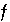
functions that is used in the numerical method is presented in this section along with the total derivative with respect to the master unknowns that is used to form the Jacobian matrix.
, are used to describe heterogeneous equilibrium. These equations are derived primarily by substituting the equations for the moles of species (derived from mass-action equations in the previous section) into mole- and charge-balance equations. When equilibrium is satisfied, all of the functions relevant to a specific equilibrium calculation are equal to zero. The zeros of the functions are found by the Newton-Raphson method, by which each function is differentiated with respect to each master unknown to form the Jacobian matrix. A set of linear equations is formed from the Jacobian matrix that can be solved to approximate a solution to the nonlinear equations. By iteratively solving successive sets of linear equations, a solution to the nonlinear equations can be found. Each of the 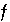
functions that is used in the numerical method is presented in this section along with the total derivative with respect to the master unknowns that is used to form the Jacobian matrix.
Activity of Water
The activity of water is calculated from an approximation that is based on Raoult's law (Garrels and Christ, 1965, p. 65-66):
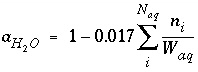
. (25)
The function  is defined as
is defined as
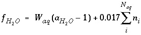
, (26)
and the total derivative of this function is
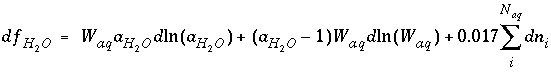
. (27)
The master unknown is the natural log of the activity of water 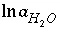
.
Ionic Strength
The ionic strength of the aqueous solution is a master unknown and is defined as
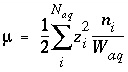
. (28)
The function  is defined as
is defined as
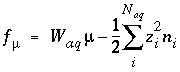
, (29)
and the total derivative of this function is
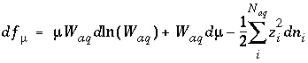
. (30)
Equilibrium with a Fixed-Volume Multicomponent Gas Phase
For a fixed-volume gas phase, the moles of each gas component can be calculated from the activities of the aqueous master species, and the numerical model treats the gas phase components in the same way that it treats aqueous species. The terms for the moles of each gas components,
n
g
, appear in the mole-balance equations for elements and the terms 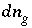
appear in the Jacobian matrix for the mole-balance equations. No additional equation labeled
f
is required to calculate equilibrium with the fixed-volume gas phase.
For data input to PHREEQC, the mass-action equations, Henry's law constant, and temperature dependence of the constant are defined with the
PHASES data block. The type of gas phase (fixed-volume or fixed-pressure), the components to include in gas-phase calculations, and initial gas-phase composition are defined with the
GAS_PHASE data block (see "Description of Data Input").
Equilibrium with a Fixed-Pressure Multicomponent Gas Phase
For a fixed-volume gas phase, the number of moles of each gas component is calculated from the activities of the aqueous master species and the total moles of gas components in the gas phase,
N
g
. The terms for the moles of each gas components,
n
g
, appear in the mole-balance equations for elements and the terms  appear in the Jacobian matrix for the mole-balance equations. Equilibrium between a fixed-pressure multicomponent gas phase and the aqueous phase requires one new equation--the sum of the partial pressures of the component gases is equal to the total pressure,
P
total
. The function
appear in the Jacobian matrix for the mole-balance equations. Equilibrium between a fixed-pressure multicomponent gas phase and the aqueous phase requires one new equation--the sum of the partial pressures of the component gases is equal to the total pressure,
P
total
. The function  is defined as
is defined as
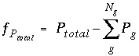
, (31)
where 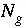
is the total number of gas components in the gas phase.
The total derivative of 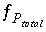
with respect to the master unknowns, with the convention that positive
dN
gas
are increases in solution concentration, is
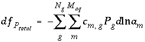
. (32)
For data input to PHREEQC, the mass-action equations, Henry's law constant, and temperature dependence of the constant are defined with the
PHASES data block. The type of gas phase (fixed-volume or fixed-pressure), the components to include in gas-phase calculations, and initial gas-phase composition are defined with the
GAS_PHASE data block (see "Description of Data Input").
Equilibrium with Pure Phases
Equilibrium between the aqueous phase and pure phases, including gases with fixed partial pressures, is included in the model through heterogeneous mass-action equations. PHREEQC allows multiple pure phases, termed a pure-phase assemblage, to exist in equilibrium with the aqueous phase, subject to the limitations of the Gibbs' Phase Rule. The activity of a pure phase is assumed to be identically 1.0. The additional master unknown for each pure phase is the moles of the pure phase that is present in the system,
n
p
, where
p
refers to the
p
th
phase. Terms representing the changes in the moles of each pure phase occur in the mole-balance equations for elements. PHREEQC also allows a calculation where equilibrium with a pure phase is produced by adding or removing a specified reactant (
alternative formula
and
alternative phase
in
EQUILIBRIUM_PHASES data block); the mole transfer of the reactant that is necessary to produce equilibrium with the pure phase is calculated. In this type of calculation, the terms in the mole-balance equations are derived from the stoichiometry of the reactant rather than the stoichiometry of the pure phase, and the unknown is the number of moles of reactant that enter or leave solution.
The new function corresponding to each of the new unknowns is a mass-action expression for each pure phase. PHREEQC uses dissolution reactions, in the sense that the pure phase is on the left-hand side of the chemical equation. For calcite, the dissolution reaction may be written as
 , (33)
, (33)
and, using log
K
of 10
-8.48
and activity of the pure solid of 1.0, the resulting mass-action expression is
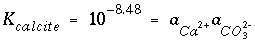
. (34)
In general, pure-phase equilibria can be represented with the following equation:
 , (35)
, (35)
where  is the stoichiometric coefficient of master species
m
in the dissolution reaction. The values of
is the stoichiometric coefficient of master species
m
in the dissolution reaction. The values of  may be positive or negative. For PHREEQC, terms on the left-hand side of a dissolution reaction are assigned negative coefficients and terms on the right-hand side are assigned positive coefficients. The saturation index for the mineral,
SI
p
, is defined to be
may be positive or negative. For PHREEQC, terms on the left-hand side of a dissolution reaction are assigned negative coefficients and terms on the right-hand side are assigned positive coefficients. The saturation index for the mineral,
SI
p
, is defined to be
 . (36)
. (36)
The function used for phase equilibrium in the numerical method is
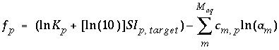
, (37)
where  is the target saturation index for the phase, and 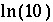
converts base-10 log to natural log. The target saturation index is specified by the user; a positive, zero, or negative value specifies supersaturation, equilibrium, or undersaturation for the mineral with respect to the solution. For fixed-partial-pressure gas component,
is the target saturation index for the phase, and 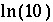
converts base-10 log to natural log. The target saturation index is specified by the user; a positive, zero, or negative value specifies supersaturation, equilibrium, or undersaturation for the mineral with respect to the solution. For fixed-partial-pressure gas component,  is equivalent to the log of the partial pressure of the gas component. The total derivative with respect to the master unknowns is
is equivalent to the log of the partial pressure of the gas component. The total derivative with respect to the master unknowns is
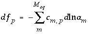
. (38)
For data input to PHREEQC, the mass-action equations, equilibrium constant, and temperature dependence of the constant for a pure phase are defined with the
PHASES data block. Initial composition of a pure-phase assemblage and target saturation indices are defined with the
EQUILIBRIUM_PHASES data block.
Equilibrium with Solid Solutions
Modeling of ideal, multicomponent or nonideal, binary solid solutions is based on the work of Glynn (Glynn and Reardon, 1990; Glynn and others, 1990; Glynn, 1991; Glynn and Parkhurst, 1992). Equilibrium between the aqueous phase and solid solutions is included in the model through heterogeneous mass-action equations. PHREEQC allows multiple solid solutions, termed a solid-solution assemblage, to exist in equilibrium with the aqueous phase, subject to the limitations of the Gibbs' Phase Rule. Modeling of nonideal solid solutions is limited to two-component (binary) solid solutions; ideal solid solutions may have two or more components. The additional master unknowns for solid solutions are the moles of each component in each solid solution  , where
ss
refers to solid solution
ss
. Terms representing the changes in the moles of each component occur in the Jacobian matrix of the mole-balance equations for elements.
, where
ss
refers to solid solution
ss
. Terms representing the changes in the moles of each component occur in the Jacobian matrix of the mole-balance equations for elements.
Unlike pure phases, the activity of a component in a solid solution is not identically 1.0. The activity of a component is defined to be 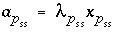
, where 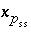
is the mole fraction of component
p
in the solid solution
ss
, and 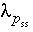
is the activity coefficient. The mole fraction of a component in a solid solution is defined as 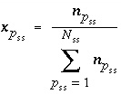
, where  is the number of components in solid solution
ss
. For ideal solid solutions, the activity coefficient is 1.0; for nonideal, binary solid solutions, the activity coefficients for the components are defined with the Guggenheim expressions:
is the number of components in solid solution
ss
. For ideal solid solutions, the activity coefficient is 1.0; for nonideal, binary solid solutions, the activity coefficients for the components are defined with the Guggenheim expressions:
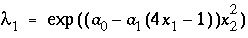
and (39)
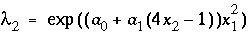
, (40)
where  and
and  are the activity coefficients of components 1 and 2, and 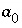
and
are the activity coefficients of components 1 and 2, and 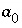
and  are nondimensional Guggenheim parameters. The nondimensional parameters are calculated from dimensional parameters for the excess free energy 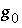
and 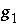
(kJ/mol) by the equations: 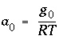
and
are nondimensional Guggenheim parameters. The nondimensional parameters are calculated from dimensional parameters for the excess free energy 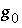
and 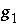
(kJ/mol) by the equations: 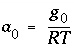
and  . The parameters
. The parameters  and 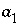
for the excess free energy may be defined directly or by a variety of means including the mole fractions of component 2 delimiting the miscibility gap, the mole fractions of component 2 delimiting the spinodal gap, the mole fraction of component 2 at the critical point and the critical temperature, Thompson and Waldbaum parameters, Margules parameters, mole fraction of component 2 and the log of the total solubility product of an alyotropic point, solid-phase activity coefficients for trace concentrations of component 1 and component 2, or two distribution coefficients for component 2 (Glynn, 1991).
and 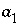
for the excess free energy may be defined directly or by a variety of means including the mole fractions of component 2 delimiting the miscibility gap, the mole fractions of component 2 delimiting the spinodal gap, the mole fraction of component 2 at the critical point and the critical temperature, Thompson and Waldbaum parameters, Margules parameters, mole fraction of component 2 and the log of the total solubility product of an alyotropic point, solid-phase activity coefficients for trace concentrations of component 1 and component 2, or two distribution coefficients for component 2 (Glynn, 1991).
The new function corresponding to each of the new unknowns is a mass-action expression for each component in each solid solution. PHREEQC uses dissolution reactions, in the sense that the solid-solution component is on the left-hand side of the chemical equation. For aragonite in an aragonite-strontianite solid solution, the dissolution reaction may be written as
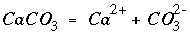
, (41)
and, using log
K
of 10
-8.34
and activity coefficient for the solid, the resulting mass-action expression is
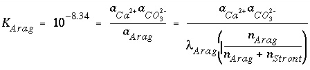
. (42)
In general, solid-solution phase equilibria can be represented with the following equation for each component:
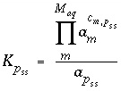
, (43)
where 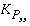
is the equilibrium constant of component
p
in pure form, and 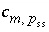
is the stoichiometric coefficient of master species
m
in the dissolution reaction for component
p
in solid solution
ss
. The values of  may be positive or negative. For PHREEQC, terms on the left-hand side of a phase dissolution reaction are assigned negative coefficients and terms on the right-hand side are assigned positive coefficients. The solubility quotient for a component of the solid solution is defined to be
may be positive or negative. For PHREEQC, terms on the left-hand side of a phase dissolution reaction are assigned negative coefficients and terms on the right-hand side are assigned positive coefficients. The solubility quotient for a component of the solid solution is defined to be
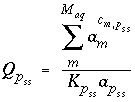
, (44)
where 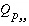
is equal to 1 and  is equal to 0 at equilibrium. The functions used in the numerical method for each component of a nonideal, binary solid solution are
is equal to 0 at equilibrium. The functions used in the numerical method for each component of a nonideal, binary solid solution are
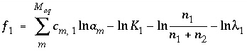
and (45)
 . (46)
. (46)
The total derivative with respect to the master unknowns is
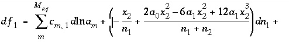
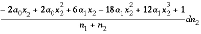
(47)
and

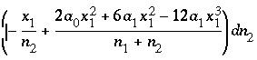
. (48)
The function used in the numerical method for each component of an ideal solid solution is
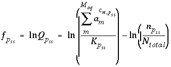
, (49)
where 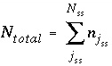
and 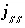
ranges over all the components in solid solution
ss
. The total derivative with respect to the master unknowns is
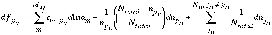
. (50)
For data input to PHREEQC, the mass-action equations, equilibrium constant, and temperature dependence of the constant for each pure phase are defined with the
PHASES data block. Initial composition of a solid-solution assemblage and Guggenheim parameters for nonideal solid solutions are defined with the
SOLID_SOLUTIONS data block (see "Description of Data Input").
Mole Balance for Surface Sites
Mole balance for a surface site is a special case of the general mole-balance equation. The surface assemblage is a set of one or more surfaces, each of which may have one or more site types. The total number of moles of a surface site type is specified by input to be one of the following: (1) fixed, (2) proportional to the moles of a pure phase, or (3) proportional to the moles of a kinetic reactant. The sum of the moles of surface sites occupied by the surface species of a site type must equal the total moles of that surface site type. The following function is derived from the mole-balance relation for a surface site type  of surface 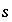
:
of surface 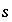
:
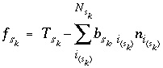
, (51)
where the value of the function  is zero when mole balance is achieved,
is zero when mole balance is achieved,  is the moles of the surface site type,
is the moles of the surface site type,  is the number of surface species for the site type, and 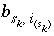
is the number of surface sites occupied by the surface species
is the number of surface species for the site type, and 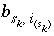
is the number of surface sites occupied by the surface species  . The total derivative of
. The total derivative of  is
is
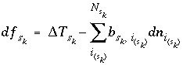
. (52)
If the total number of sites is proportional to the moles of a pure phase, then 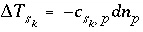
, where 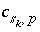
is the moles of surface sites per mole of phase
p
. If the phase dissolves, then  is positive and the number of surface sites decreases. If the total number of sites is proportional to the moles of a kinetic reactant,
is positive and the number of surface sites decreases. If the total number of sites is proportional to the moles of a kinetic reactant,  in the total derivative equation. The change in the number of sites is included as part of the reaction that is integrated with the rate equations and no term is included in the Jacobian matrix. As the kinetic reaction increases or decreases the moles of reactant, the number of surface sites is adjusted proportionately. If the number of surface sites is fixed, 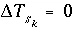
.
in the total derivative equation. The change in the number of sites is included as part of the reaction that is integrated with the rate equations and no term is included in the Jacobian matrix. As the kinetic reaction increases or decreases the moles of reactant, the number of surface sites is adjusted proportionately. If the number of surface sites is fixed, 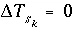
.
For data input to PHREEQC, the number of moles of each type of surface site is defined with the
SURFACE data block and may be a fixed quantity or it may be related to the moles of a pure phase or a kinetic reactant. Surface site types are defined with the
SURFACE_MASTER_SPECIES data block and surface species are defined with the
SURFACE_SPECIES data block (see "Description of Data Input").
Mole Balance for Exchange Sites
Mole balance for an exchange site is a special case of the general mole-balance equation. The total number of moles of an exchange site is specified by input to be one of the following: (1) fixed, (2) proportional to the moles of a pure phase, or (3) proportional to the moles of a kinetic reactant. The sum of the moles of sites occupied by exchange species must equal the total moles of the exchange site. The following function is derived from the mole-balance relation for an exchange site:
, (53)
where the value of the function
f
e
is zero when mole balance is achieved,
T
e
is the total moles of exchange sites for exchanger  , and
is the number of exchange sites occupied by the exchange species. The total derivative of
f
e
is
, and
is the number of exchange sites occupied by the exchange species. The total derivative of
f
e
is
 . (54)
. (54)
If the total number of sites is proportional to the moles of a pure phase, then
, where
is the moles of exchange sites per mole of phase
p
. If the phase dissolves, then  is positive and the number of exchange sites decreases. If the total number of sites is proportional to the moles of a kinetic reactant,
is positive and the number of exchange sites decreases. If the total number of sites is proportional to the moles of a kinetic reactant,  in the total derivative equation. The change in the number of sites is included as part of the reaction that is integrated with the rate equations and no term is included in the Jacobian matrix. As the kinetic reaction increases or decreases the moles of the reactant, the number of exchange sites is adjusted proportionately. If the number of exchange sites is fixed,
in the total derivative equation. The change in the number of sites is included as part of the reaction that is integrated with the rate equations and no term is included in the Jacobian matrix. As the kinetic reaction increases or decreases the moles of the reactant, the number of exchange sites is adjusted proportionately. If the number of exchange sites is fixed,  .
.
For data input to PHREEQC, the moles of exchange sites are defined in the
EXCHANGE data block and may be a fixed quantity or it may be related to the moles of a pure phase or a kinetic reactant. Exchanger sites are defined with the
EXCHANGE_MASTER_SPECIES data block and exchange species are defined with the
EXCHANGE_SPECIES data block (see "Description of Data Input").
Mole Balance for Alkalinity
The mole-balance equation for alkalinity is used only in speciation calculations and in inverse modeling. Mole balance for alkalinity is a special case of the general mole-balance equation where the coefficients are defined by the alkalinity contribution of each aqueous species. Alkalinity is defined as an element in PHREEQC and a master species is associated with this element (see
SOLUTION_MASTER_SPECIES keyword in "Description of Data Input"). In the default databases for PHREEQC, the master species for alkalinity is
. The master unknown for alkalinity is
, or for the default databases,
.
The total number of equivalents of alkalinity is specified by input to the model. The sum of the alkalinity contribution of each aqueous species must equal the total number of equivalents of alkalinity. The following function is derived from the alkalinity-balance equation:
, (55)
where the value of the function
f
Alk
is zero when mole balance is achieved,
T
Alk
is the number of equivalents of alkalinity in solution, and  is the alkalinity contribution of the aqueous species
i
(eq/mol). The total derivative of
f
Alk
is
is the alkalinity contribution of the aqueous species
i
(eq/mol). The total derivative of
f
Alk
is
. (56)
The value of  must be positive, provided a carbonate species is the master species for alkalinity. Conceptually, a measured alkalinity differs from the alkalinity calculated by PHREEQC. In the default database files for PHREEQC the values of
must be positive, provided a carbonate species is the master species for alkalinity. Conceptually, a measured alkalinity differs from the alkalinity calculated by PHREEQC. In the default database files for PHREEQC the values of  have been chosen such that the reference state (
) for each element or element valence state is the predominant species at a pH of 4.5. It is assumed that all of the element or element valence state is converted to this predominant species in an alkalinity titration. However, significant concentrations of aqueous species that are not in the reference state (that is species that have nonzero alkalinity contributions) may exist at the endpoint of a titration, and the extent to which this occurs causes the alkalinity calculated by PHREEQC to be a different quantity than the measured alkalinity. Hydroxide complexes of iron and aluminum are the most common examples of species that may not be converted to the defined reference state. Thus, the alkalinity of a solution as calculated by PHREEQC, though it will be numerically equal to the measured alkalinity, is an approximation because of the assumption that a titration totally converts elements and element valence states to their reference state. In most solutions, where the alkalinity is derived predominantly from carbonate species, the approximation is valid.
have been chosen such that the reference state (
) for each element or element valence state is the predominant species at a pH of 4.5. It is assumed that all of the element or element valence state is converted to this predominant species in an alkalinity titration. However, significant concentrations of aqueous species that are not in the reference state (that is species that have nonzero alkalinity contributions) may exist at the endpoint of a titration, and the extent to which this occurs causes the alkalinity calculated by PHREEQC to be a different quantity than the measured alkalinity. Hydroxide complexes of iron and aluminum are the most common examples of species that may not be converted to the defined reference state. Thus, the alkalinity of a solution as calculated by PHREEQC, though it will be numerically equal to the measured alkalinity, is an approximation because of the assumption that a titration totally converts elements and element valence states to their reference state. In most solutions, where the alkalinity is derived predominantly from carbonate species, the approximation is valid.
For data input to PHREEQC, the alkalinity of each species is calculated from the association reaction for the species, which is defined in the
SOLUTION_SPECIES data block, and the alkalinity contributions of the master species, which are defined with the
SOLUTION_MASTER_SPECIES data block. Total alkalinity is part of the solution composition defined with the
SOLUTION or
SOLUTION_SPREAD data block (see "Description of Data Input").
Mole Balance for Elements
The total moles of an element in the system are the sum of the moles initially present in the pure-phase and solid-solution assemblages, aqueous phase, exchange assemblage, surface assemblage, gas phase, and diffuse layers of the surfaces. The following function is the general mole-balance equation:
, (57)
where the value of the function
f
m
is zero when mole-balance is achieved,
T
m
is the total moles of the element in the system,
N
p
is the number of phases in the pure-phase assemblage,
SS
is the number of solid solutions in the solid-solution assemblage,
N
ss
is the number of components in solid solution
ss
,
N
aq
is the number of aqueous species,
E
is the number of exchangers in the exchange assemblage,
N
e
is the number of exchange species for exchange site
e
,
S
is the number of surfaces in the surface assemblage,  is the number of surface types for surface
s
,
is the number of surface types for surface
s
,  is the number of surface species for surface type
is the number of surface species for surface type  , and
N
g
is the number of gas-phase components. The moles of each entity in the system are represented by
n
p
for phases in the pure-phase assemblage,
, and
N
g
is the number of gas-phase components. The moles of each entity in the system are represented by
n
p
for phases in the pure-phase assemblage,  for components in a solid solution,
n
i
for aqueous species,
for components in a solid solution,
n
i
for aqueous species,  for the exchange species of exchange site
e
,
for the exchange species of exchange site
e
,  for surface species for surface site type
for surface species for surface site type  ,
n
g
for the gas components, and
,
n
g
for the gas components, and  for aqueous species in the diffuse layer of surface
s
. The moles of element
m
per mole of each entity are represented by
b
m
, with an additional subscript to define the relevant entity;
is usually, but not always, equal to
(the coefficient of the master species for
m
in the mass-action equation).
for aqueous species in the diffuse layer of surface
s
. The moles of element
m
per mole of each entity are represented by
b
m
, with an additional subscript to define the relevant entity;
is usually, but not always, equal to
(the coefficient of the master species for
m
in the mass-action equation).
To avoid solving for small differences between large numbers, the quantity in parenthesis in equation 57 is not explicitly included in the solution algorithm and the value of  is never actually calculated. Instead the quantity
is used in the function
is never actually calculated. Instead the quantity
is used in the function  . Initially,
. Initially,  is calculated from the total moles of
is calculated from the total moles of  in the aqueous phase, the exchange assemblage, the surface assemblage, the gas phase, and the surface diffuse layers:
in the aqueous phase, the exchange assemblage, the surface assemblage, the gas phase, and the surface diffuse layers:
. (58)
During the iterative solution to the equations,  is updated by the mole transfers of the pure phases and components of the solid solutions:
is updated by the mole transfers of the pure phases and components of the solid solutions:
, (59)
where
refers to the iteration number. It is possible for
to be negative in intermediate iterations, but it must be positive when equilibrium is attained.
The total derivative of the function
f
m
is
 . (60)
. (60)
For data input to PHREEQC, total moles of elements are initially defined for an aqueous phase with the
SOLUTION or
SOLUTION_SPREAD data block, for an exchange assemblage with the
EXCHANGE data block, for a surface assemblage with the
SURFACE data block, for the gas phase with a
GAS_PHASE data block. The moles of each phase in a pure-phase assemblage are defined with the
EQUILIBRIUM_PHASES data block. The moles of each component in each solid solution in a solid-solution assemblage are defined with the
SOLID_SOLUTIONS data block. Total moles of elements may also be modified by batch-reaction and transport calculations (see "Description of Data Input").
Aqueous Charge Balance
The charge-balance equation sums the equivalents of aqueous cations and anions and, in some cases, the charge imbalances developed on surfaces and exchangers. When specified, a charge-balance equation is used in initial solution calculations to adjust the pH or the activity of a master species (and consequently the total concentration of an element or element valence state) to produce electroneutrality in the solution. The charge-balance equation is necessary to calculate pH in batch reactions and transport simulations.
In real solutions, the sum of the equivalents of anions and cations must be zero. However, analytical errors and unanalyzed constituents in chemical analyses generally cause electrical imbalances to be calculated for solutions. If a charge imbalance is calculated for an initial solution, the pH is adjusted in subsequent batch reactions or transport simulations to maintain the same charge imbalance. If mixing is performed, the charge imbalance for the batch-reaction step is the sum of the charge imbalances of each solution weighted by its mixing factor. If a surface is used in a simulation and the explicit diffuse-layer calculation is not specified, then the formation of charged surface species will result in a surface charge imbalance. Similarly, if exchange species are not electrically neutral (all exchange species in the default databases are electrically neutral), the exchanger will accumulate a charge. The charge imbalances of surfaces and exchangers are included in the general charge-balance equation.
The charge imbalance for a solution is calculated in each initial solution calculation, in each batch-reaction step, and for each cell during each time step of transport simulations with the equation:
, (61)
where
q
identifies the aqueous phase,  is the charge imbalance for aqueous phase
q
, and
z
i
is the charge on aqueous species
i
. If charged surfaces or exchangers are not present, the charge imbalance for a solution at the end of a batch-reaction or transport simulation will be the same as at the beginning of the simulation.
is the charge imbalance for aqueous phase
q
, and
z
i
is the charge on aqueous species
i
. If charged surfaces or exchangers are not present, the charge imbalance for a solution at the end of a batch-reaction or transport simulation will be the same as at the beginning of the simulation.
The charge imbalance on a surface is calculated in the initial surface-composition calculation, in each batch-reaction step, and for each cell during each time step of transport simulations with the equation:
, (62)
where  is the charge imbalance for the surface,
is the charge on the surface species
i
of surface type
is the charge imbalance for the surface,
is the charge on the surface species
i
of surface type  of surface
s
, and the final term in the equation represents the charge accumulated in the diffuse layer. The final term is used only if the diffuse-layer composition is explicitly included in the calculation (
-diffuse_layer in the
SURFACE data block). When the diffuse-layer composition is calculated explicitly, it is required that all solutions be charge balanced, and
of surface
s
, and the final term in the equation represents the charge accumulated in the diffuse layer. The final term is used only if the diffuse-layer composition is explicitly included in the calculation (
-diffuse_layer in the
SURFACE data block). When the diffuse-layer composition is calculated explicitly, it is required that all solutions be charge balanced, and  will always be equal to zero.
will always be equal to zero.
Normally, exchange species have no net charge, but for generality, this is not required. However, the activity of exchange species (the equivalent fraction) is not well defined if the sum of the charged species is not equal to the total number of equivalents of exchange sites (exchange capacity). If charged exchange species exist, then the charge imbalance on an exchanger is calculated in the initial exchange-composition calculation, in each batch-reaction step, and for each cell during each time step of transport simulations with the equation:
, (63)
where  is the charge imbalance for the exchanger, and
is the charge imbalance for the exchanger, and  is the charge on the exchange species
i
of exchanger
e
.
is the charge on the exchange species
i
of exchanger
e
.
The charge imbalance for the system is defined at the beginning of each batch-reaction step and for each cell at the beginning of each time step in transport simulations to be:
, (64)
where  is the charge imbalance for the system,
Q
is the number of aqueous phases that are mixed in the batch-reaction step or in the cell for a transport step,
is the charge imbalance for the system,
Q
is the number of aqueous phases that are mixed in the batch-reaction step or in the cell for a transport step,  is the mixing fraction for aqueous phase
q
,
S
is the number of surfaces, and
E
is the number of exchangers.
is the mixing fraction for aqueous phase
q
,
S
is the number of surfaces, and
E
is the number of exchangers.
The charge-balance function is
, (65)
where  is zero when charge balance has been achieved. If the diffuse-layer composition is explicitly calculated, a separate charge-balance equation is included for each surface and the sum of the terms in the parentheses will be zero when surface charge balance is achieved. If the diffuse-layer composition is not calculated, the second term inside the parentheses is zero. The total derivative of
is zero when charge balance has been achieved. If the diffuse-layer composition is explicitly calculated, a separate charge-balance equation is included for each surface and the sum of the terms in the parentheses will be zero when surface charge balance is achieved. If the diffuse-layer composition is not calculated, the second term inside the parentheses is zero. The total derivative of  is
is
, (66)
where the triple summation for surfaces is present only if the diffuse-layer composition is not explicitly calculated.
For data input to PHREEQC, charge imbalance is defined by data input for
SOLUTION or
SOLUTION_SPREAD,
EXCHANGE, and
SURFACE data blocks combined with speciation, initial exchange-composition, and initial surface-composition calculations. The charge on a species is defined in the balanced chemical reaction that defines the species in
SOLUTION_SPECIES,
EXCHANGE_SPECIES, or
SURFACE_SPECIES data blocks (see "Description of Data Input").
Surface Charge-Potential Equation with No Explicit Calculation of the Diffuse-Layer Composition
By default, PHREEQC uses the approach described by Dzombak and Morel (1990) to relate the charge density on the surface,  , with the potential at the surface,
, with the potential at the surface,  . The surface-charge density is the amount of charge per area of surface material, which can be calculated from the distribution of surface species:
. The surface-charge density is the amount of charge per area of surface material, which can be calculated from the distribution of surface species:
, (67)
where
is the charge density for surface
s
in coulombs per square meter (C/m
2
),
F
is the Faraday constant in coulombs per mole (96,493.5 C/mol),
A
surf
is the surface area of the material (m
2
). The surface area is calculated by one of the following formulas: (1)
, where
A
s
is the specific area of the surface material (m
2
/g), and
S
s
is the mass of surface material (g), or (2)  , where
A
r
is the surface area per mole of a pure phase or kinetic reactant (m
2
/mol), and
n
r
is the moles of the pure phase or reactant. At 25
o
C, the surface-charge density is related to the electrical potential at the surface by:
, where
A
r
is the surface area per mole of a pure phase or kinetic reactant (m
2
/mol), and
n
r
is the moles of the pure phase or reactant. At 25
o
C, the surface-charge density is related to the electrical potential at the surface by:
, (68)
where  is the dielectric constant of water (78.5, dimensionless),
is the dielectric constant of water (78.5, dimensionless),  is the permittivity of free space (8.854x10
-12
CV
-1
m
-1
or C
2
/m-J),
is the permittivity of free space (8.854x10
-12
CV
-1
m
-1
or C
2
/m-J),  is the ionic charge of a symmetric electrolyte,
R
is the gas constant (8.314 J mol
-1
K
-1
),
T
is temperature (K),
is the ionic charge of a symmetric electrolyte,
R
is the gas constant (8.314 J mol
-1
K
-1
),
T
is temperature (K),  is the ionic strength, and
F
is the Faraday constant (J V
-1
eq
-1
or C/mol),
is the potential at the surface in volts. At 25
o
C,
is the ionic strength, and
F
is the Faraday constant (J V
-1
eq
-1
or C/mol),
is the potential at the surface in volts. At 25
o
C,  . The charge of the electrolyte ions is assumed to be ±1.
. The charge of the electrolyte ions is assumed to be ±1.
The charge-potential function is
, (69)
and the total derivative of this function is
. (70)
For data input to PHREEQC, calculation without an explicit diffuse layer is the default. Specific surface area ( or
or  ) and mass of surface (
) and mass of surface ( ) are defined in the
SURFACE data block. The moles of surface sites are defined (1) in the
SURFACE data block if the number of sites is fixed, (2) by a proportionality factor in the
SURFACE data block and the moles of a phase in
EQUILIBRIUM_PHASES data block, or (3) by a proportionality factor in the
SURFACE data block and the moles of a kinetic reactant in
KINETICS data block. The charge on a surface species is specified in the balanced chemical reaction that defines the species in the
SURFACE_SPECIES data block (see "Description of Data Input").
) are defined in the
SURFACE data block. The moles of surface sites are defined (1) in the
SURFACE data block if the number of sites is fixed, (2) by a proportionality factor in the
SURFACE data block and the moles of a phase in
EQUILIBRIUM_PHASES data block, or (3) by a proportionality factor in the
SURFACE data block and the moles of a kinetic reactant in
KINETICS data block. The charge on a surface species is specified in the balanced chemical reaction that defines the species in the
SURFACE_SPECIES data block (see "Description of Data Input").
Surface Charge-Balance Equation with Explicit Calculation of the Diffuse-Layer Composition
As an alternative to the previous model for the surface charge-potential relation, PHREEQC optionally will use the approach developed by Borkovec and Westall (1983). Their development solves the Poisson-Boltzmann equation to determine surface excesses of ions in the diffuse layer at the oxide-electrolyte interface. Throughout the derivation that follows, it is assumed that a volume of one liter (L) contains 1 kg of water.
The surface excess is:
, (71)
where  is the surface excess in mol m
-2
of aqueous species
i
on surface
s
,
is the location of the outer Helmholtz plane,
is concentration as a function of distance from the surface in mol m
-3
, and
is the concentration in the bulk solution. The surface excess is related to concentration in the reference state of 1.0 kg of water by
is the surface excess in mol m
-2
of aqueous species
i
on surface
s
,
is the location of the outer Helmholtz plane,
is concentration as a function of distance from the surface in mol m
-3
, and
is the concentration in the bulk solution. The surface excess is related to concentration in the reference state of 1.0 kg of water by
, (72)
where
is the surface excess of aqueous species
i
in moles per kilogram water (mol/kgw). This surface-excess concentration can be related to the concentration in the bulk solution by
, (73)
where  is a function of the potential at the surface and the concentrations and charges of all ions in the bulk solution:
is a function of the potential at the surface and the concentrations and charges of all ions in the bulk solution:
, (74)
where
,
is the value of
X
at the outer Helmholtz plane,
A
surf
is the surface area (m
2
), sign(
) is +1 or -1 depending on the sign of the term in parentheses,
i
is the aqueous species for which the surface excess is being calculated,
z
i
is the charge on aqueous species
i
,
l
ranges over all aqueous species,
m
l
is the molality and
z
l
is the charge of aqueous species
l
, and
. The value of  at 25
o
C is 0.02931 (L/mol)
1/2
C m
-2
. The relation between the unknown (
X
) used by Borkovec and Westall (1983) and the master unknown used by PHREEQC is
.
at 25
o
C is 0.02931 (L/mol)
1/2
C m
-2
. The relation between the unknown (
X
) used by Borkovec and Westall (1983) and the master unknown used by PHREEQC is
.
The development of Borkovec and Westall (1983) calculates only the total excess concentration in the diffuse layer of each aqueous species. A problem arises in batch-reaction and transport modeling when a solution is removed from the surface, for example, in an advection simulation when the water in one cell advects into the next cell. In this case, the total moles that remain with the surface need to be known. In PHREEQC, an arbitrary assumption is made that the diffuse layer is a specified thickness and that all of the surface excess resides in the diffuse layer. The total moles of an aqueous species in the diffuse layer are then the sum of the contributions from the surface excess plus the bulk solution in the diffuse layer:
, (75)
where
refers to the moles of aqueous species
i
that are present in the diffuse layer due to the contribution from the bulk solution,
refers to the surface excess,  is the mass of water in the system excluding the diffuse layer,
is the mass of water in the diffuse layer of surface
s
. It is assumed that the amount of water in the aqueous phase is much greater than in the diffuse layers, such that
is the mass of water in the system excluding the diffuse layer,
is the mass of water in the diffuse layer of surface
s
. It is assumed that the amount of water in the aqueous phase is much greater than in the diffuse layers, such that  , (In version 1,
). The mass of water in the diffuse layer is calculated from the thickness of the diffuse layer and the surface area, assuming 1 L contains 1 kg water:
, (In version 1,
). The mass of water in the diffuse layer is calculated from the thickness of the diffuse layer and the surface area, assuming 1 L contains 1 kg water:
, (76)
where
is the thickness of the diffuse layer in meters. If the moles of surface sites are related to the moles of a pure phase or kinetic reactant, then
, otherwise
is constant and calculated from the specific area and the mass of the surface that are specified on input. According to electrostatic theory, the thickness of the diffuse layer should be greater at low ionic strength and smaller at high ionic strength. The default value used in PHREEQC for the thickness of the diffuse layer is 1x10
-8
m, which is approximately the thickness calculated by Debye theory for an ionic strength of 0.001 molal. For ionic strength 0.00001, the Debye length of the diffuse layer is calculated to be 1x10
-7
m. The assumption that the amount of water in the diffuse layer is small will be invalid if the surface area is sufficiently large; for a thickness of 1x10
-7
m, a surface area of 1000 m
2
results in a diffuse-layer volume of 0.1 L, which is a significant portion of 1 L of bulk solution.
The total derivative of the moles of an aqueous species in the diffuse layer is
, (77)
where the second term is the partial derivative with respect to the master unknown for the potential at the surface,  , and the last term is present only if the number of surface sites is related to the moles of a pure phase or kinetic reactant. The partial derivative,
, and the last term is present only if the number of surface sites is related to the moles of a pure phase or kinetic reactant. The partial derivative,  , is equal to the integrand from equation 74 evaluated at
, is equal to the integrand from equation 74 evaluated at  :
:
, (78)
and the partial derivative of the function  with respect to the master unknown is
with respect to the master unknown is
. (79)
In the numerical method, it is computationally expensive to calculate the functions  , so the same approach as Borkovec and Westall (1983) is used in PHREEQC to reduce the number of function evaluations. A new level of iterations is added when the diffuse layer is explicitly included in the calculations. The functions and their partial derivatives are explicitly evaluated once at the beginning of each of these diffuse-layer iterations. During the model iterations, which occur within the diffuse-layer iterations, the values of the functions are updated using the following equation:
, so the same approach as Borkovec and Westall (1983) is used in PHREEQC to reduce the number of function evaluations. A new level of iterations is added when the diffuse layer is explicitly included in the calculations. The functions and their partial derivatives are explicitly evaluated once at the beginning of each of these diffuse-layer iterations. During the model iterations, which occur within the diffuse-layer iterations, the values of the functions are updated using the following equation:
, (80)
where
k
is the model iteration number and  is the value that is evaluated explicitly at the beginning of the diffuse-layer iteration. The model iterations end when the Newton-Raphson method has converged on a solution; however, convergence is based on the values of the functions
is the value that is evaluated explicitly at the beginning of the diffuse-layer iteration. The model iterations end when the Newton-Raphson method has converged on a solution; however, convergence is based on the values of the functions  that are estimates. Thus, diffuse-layer iterations continue until the values of the functions are the same on successive diffuse-layer iterations within a specified tolerance.
that are estimates. Thus, diffuse-layer iterations continue until the values of the functions are the same on successive diffuse-layer iterations within a specified tolerance.
When explicitly calculating the composition of the diffuse layer, the function involving the
sinh
of the potential unknown (equation 69) is replaced with a charge-balance function that includes the surface charge and the diffuse-layer charge:
, (81)
where the function  is zero when charge balance is achieved. The total derivative of
is zero when charge balance is achieved. The total derivative of  is
is
. (82)
For data input to PHREEQC, explicit calculation of the diffuse layer is invoked using the
-diffuse_layer identifier in the
SURFACE data block. Specific surface area ( or
or  ) and mass of surface (
) are defined in the
SURFACE data block. The moles of surface sites are defined (1) in
SURFACE if the number of sites is fixed, or (2) by a proportionality factor in the
SURFACE data block and the moles of a phase in
EQUILIBRIUM_PHASES data block, or (3) by a proportionality factor in the
SURFACE data block and the moles of a kinetic reactant in
KINETICS data block. The charge on a surface species is specified in the balanced chemical reaction that defines the species in the
SURFACE_SPECIES data block (see "Description of Data Input").
) and mass of surface (
) are defined in the
SURFACE data block. The moles of surface sites are defined (1) in
SURFACE if the number of sites is fixed, or (2) by a proportionality factor in the
SURFACE data block and the moles of a phase in
EQUILIBRIUM_PHASES data block, or (3) by a proportionality factor in the
SURFACE data block and the moles of a kinetic reactant in
KINETICS data block. The charge on a surface species is specified in the balanced chemical reaction that defines the species in the
SURFACE_SPECIES data block (see "Description of Data Input").
Non-Electrostatic Surface Complexation
Davis and Kent (1990) describe a non-electrostatic surface-complexation model. In this model, the electrostatic term is ignored in the mass-action expressions for surface complexes. In addition, no surface charge-balance or surface charge-potential relation is used; only the mole-balance equation is included for each surface site type.
For data input to PHREEQC, the non-electrostatic model for a surface is invoked by using the
-no_edl identifier in the
SURFACE data block (see "Description of Data Input").
| Next|| Previous || Top |